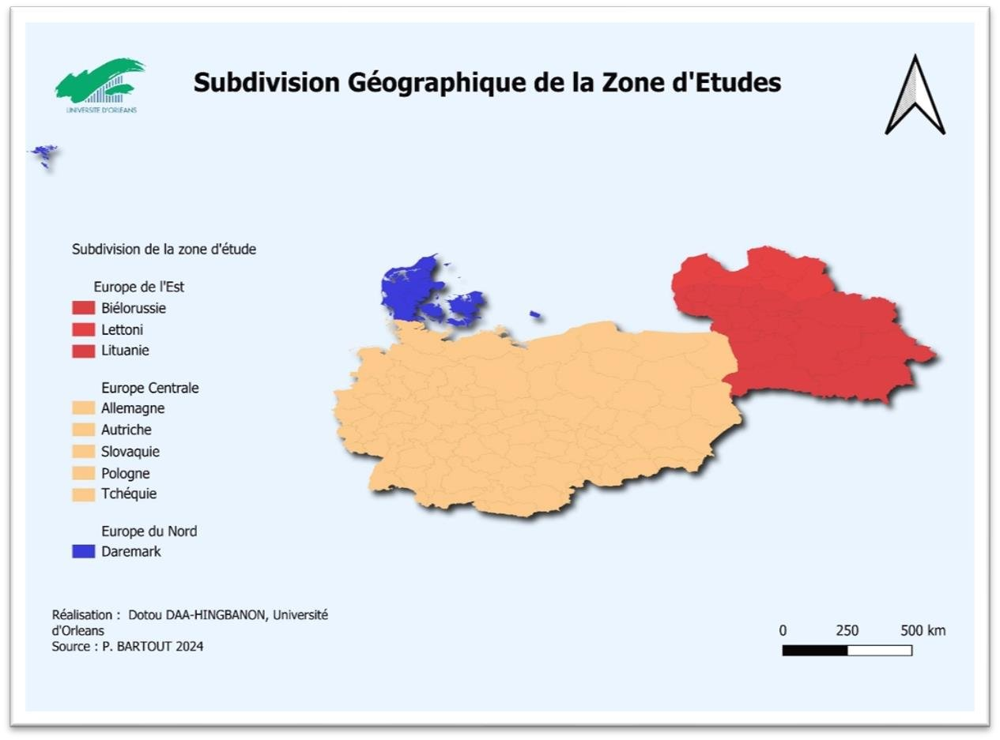
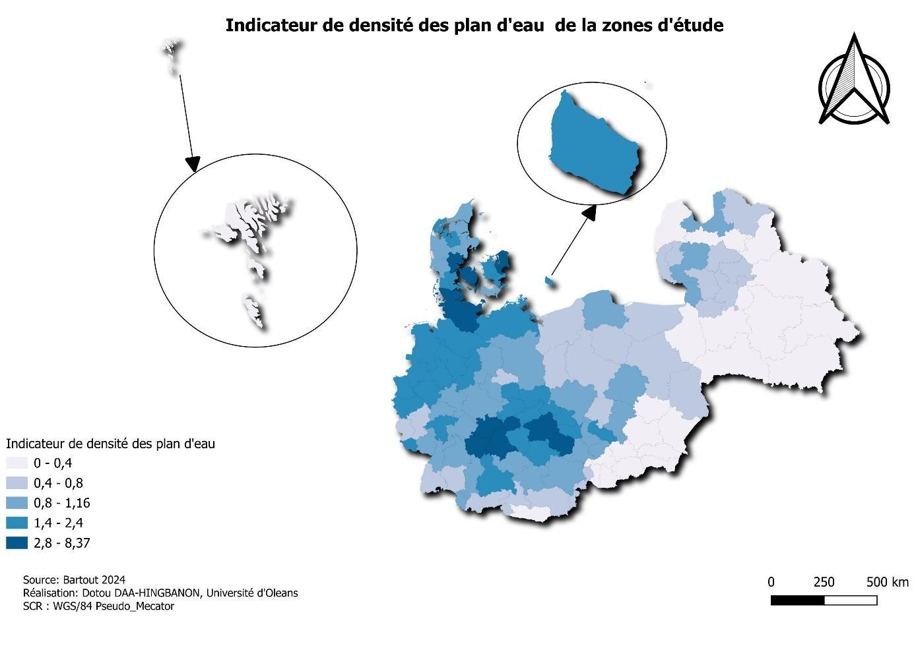
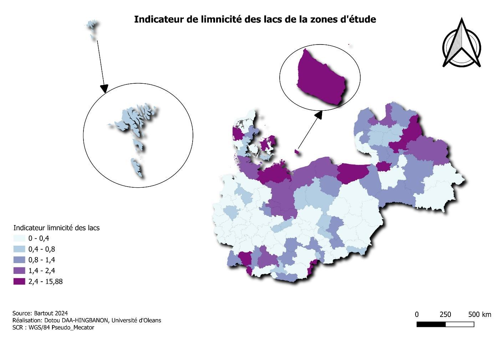
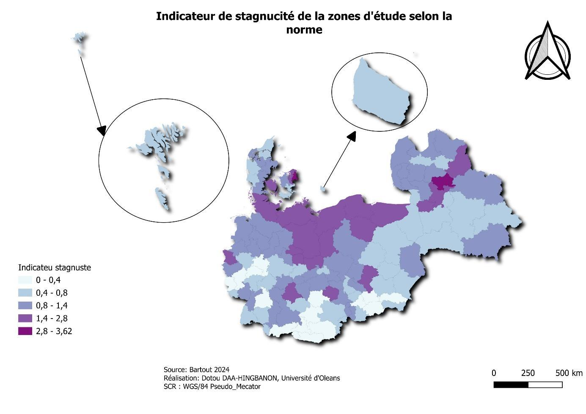
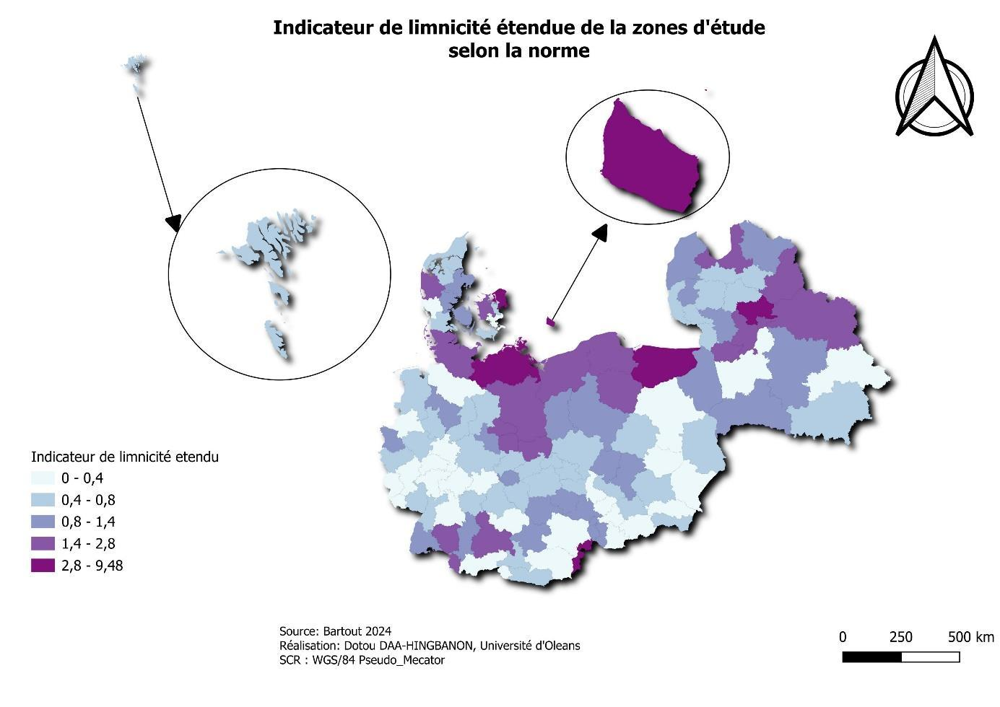
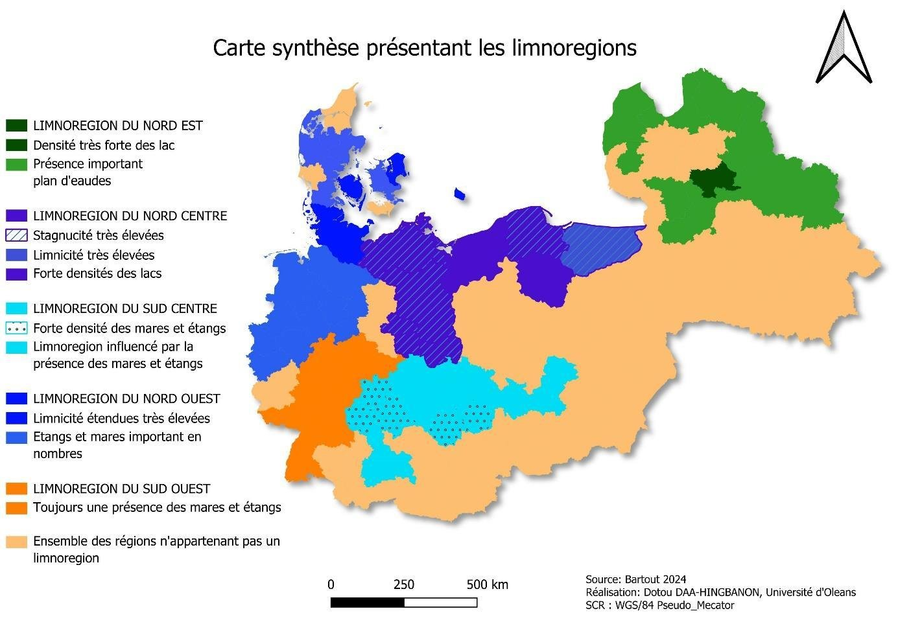

Géomatique, Limnologie, Environnement et Territoires · Université d'Orléans
Indicateurs d'empreinte et limnorégions à l'échelle européenne
Adapter les politiques de gestion des plans d'eau selon leurs indicateurs spécifiques
Contexte et objectif
Lacs, étangs et mares rendent des services écologiques essentiels (régulation des inondations, biodiversité, purification de l'eau) mais fonctionnent de façon très différente selon les territoires. L'objectif de ce travail est de cartographier des indicateurs d'empreinte des plans d'eau (densité, limnicité, limnicité étendue, stagnucité pour les étangs et marucité pour les mares) sur un vaste territoire couvrant l'Europe de l'Est (Biélorussie, Lettonie, Lituanie), l'Europe centrale (Allemagne, Autriche, Slovaquie, Pologne, Tchéquie) et le Danemark, afin d'en déduire des limnorégions et d'orienter des politiques de gestion adaptées à chacune.

Démarche et outils
À partir des données de la base Ecrins de l'Agence européenne pour l'environnement et d'OpenStreetMap, les couches de lacs, étangs et mares ont été fusionnées puis croisées avec les limites administratives sous QGIS, avec ajustement des superficies pour les plans d'eau à cheval sur plusieurs régions. Pour chaque type de plan d'eau, les indicateurs de densité et de part de surface occupée (limnicité, stagnucité, marucité) ont été calculés puis cartographiés selon une discrétisation en cinq classes (très faible à très forte). Le croisement de l'ensemble de ces cartes a permis de délimiter des limnorégions homogènes, caractérisées par la dominance d'un type de plan d'eau et d'un niveau d'empreinte.
Résultats
Cinq limnorégions se dégagent : le Nord-Est (Lituanie, Lettonie, nord de la Pologne et partie de la Biélorussie : densité très élevée de lacs d'origine glaciaire, occupant des cuvettes creusées par d'anciens reliefs glaciaires), le Nord-Centre (Pologne et partie de l'Allemagne : forte densité et limnicité de lacs d'origine tectonique ou glaciaire, empreinte marquée), le Sud-Centre (Tchéquie, Allemagne, Autriche, Pologne : forte densité de mares et étangs liée à des sols argileux et à l'élevage piscicole ancien), le Nord-Ouest (Danemark et partie de l'Allemagne : forte empreinte des étangs et mares d'origine agricole) et le Sud-Ouest (sud de l'Allemagne et régions adjacentes : densité et limnicité modérées, mais empreinte notable des mares et étangs, habitats clés pour les amphibiens et oiseaux aquatiques). Cette typologie plaide pour une gestion différenciée : conservation et régulation hydrique face aux pressions anthropiques dans les régions à forte densité de lacs, restauration des habitats et pratiques agricoles durables dans les régions à mares et étangs, dans une logique de gestion intégrée des ressources en eau à l'échelle transfrontalière.




